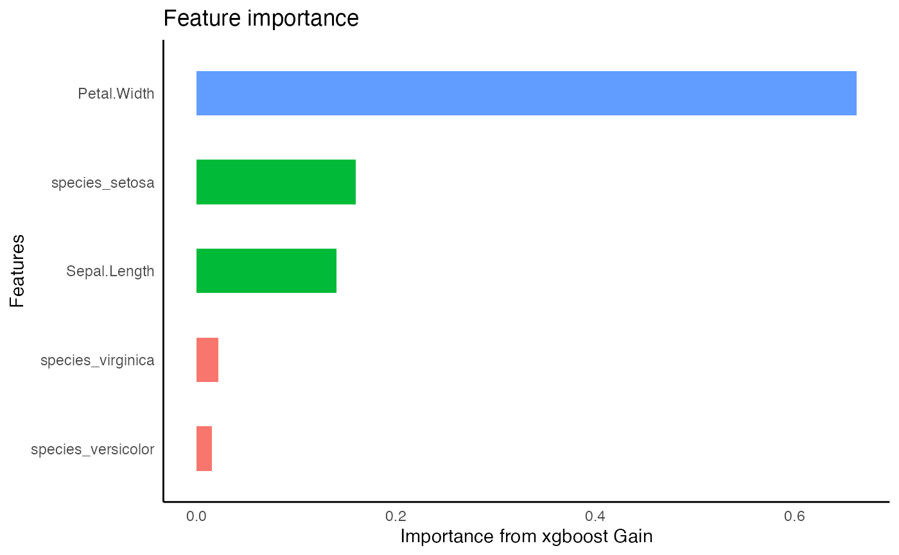

Accepts a formula to run an xgboost model. Automatically determines whether the formula is for classification or regression. Returns the xgboost model.
tidy_xgboost(
.data,
formula,
...,
mtry = NULL,
trees = 15L,
min_n = 1L,
tree_depth = 6L,
learn_rate = 0.3,
loss_reduction = 0,
sample_size = 1,
stop_iter = Inf
)dataframe
formula
additional parameters to be passed to set_engine
Tree Depth (type: integer, default: 6L); Typical values: 3-10
# Trees (type: integer, default: 15L)
Learning Rate (type: double, default: 0.3); Typical values: 0.01-0.3
# Randomly Selected Predictors (type: integer)
Minimal Node Size (type: integer, default: 1L); Keep small value For highly imbalanced class data where leaf nodes can have smaller size groups.
Minimum Loss Reduction (type: double, default: 0.0); gamma; reange: 0 to Inf; typical value: 0 - 1 assuming low-mid tree depth
Proportion Observations Sampled (type: double, default: 1.0); Typical values: 0.5 - 1
# Iterations Before Stopping (type: integer, default: Inf)
xgb.Booster model
iris %>%
tidy_xgboost(
tidy_formula(., target= Petal.Length),
trees = 500,
mtry = 2
) -> xg1
#> Warning: `early_stop` was reduced to 499.
xg1 %>%
visualize_model(top_n = 2)

# multiclass classification that returns labels
iris %>%
tidy_formula(Species) -> species_form
iris %>%
tidy_xgboost(species_form,
objective = "multi:softmax",
trees = 100,
tree_depth = 3L,
loss_reduction = 0.5) -> xgb2
#> Warning: `early_stop` was reduced to 99.
#> [16:15:31] WARNING: amalgamation/../src/learner.cc:1095: Starting in XGBoost 1.3.0, the default evaluation metric used with the objective 'multi:softmax' was changed from 'merror' to 'mlogloss'. Explicitly set eval_metric if you'd like to restore the old behavior.
xgb2 %>%
tidy_predict(newdata = iris, form = species_form) -> iris_preds
# labels are given as integers
iris_preds %>%
dplyr::count(Species, Species_preds_xgb2)
#> Error: Must group by variables found in `.data`.
#> * Column `Species_preds_xgb2` is not found.
# return to original labels
iris_preds %>%
dplyr::mutate(Species_preds_xgb2 = factor(Species_preds_xgb2, labels = unique(Species))) %>%
dplyr::count(Species, Species_preds_xgb2)
#> Error: Problem with `mutate()` column `Species_preds_xgb2`.
#> ℹ `Species_preds_xgb2 = factor(Species_preds_xgb2, labels = unique(Species))`.
#> ✖ object 'Species_preds_xgb2' not found